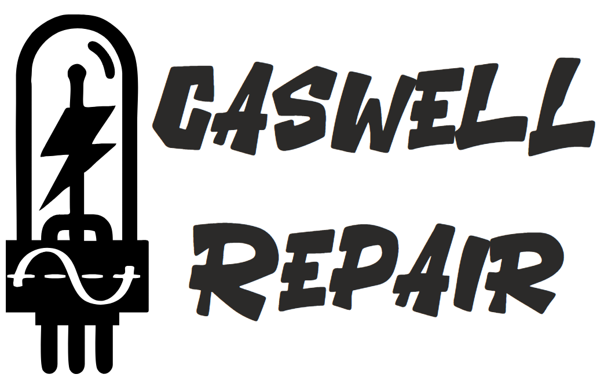

TTY AFSK FEED GENERATOR
Quick Start
Use the
Feed Manager
below to add/remove feeds (you can manage multiple sources). Supports
RSS/Atom
,
JSON Feed
, and
plain text
.
(Optional) Enable
Full text (follow links)
to fetch each article page and append the body after the headline.
Click
Start
. New items appear in
Preview
and AFSK will start automatically.
If you see CORS errors, keep the default
https://corsproxy.io/?
or set your own trusted proxy.
Sample feeds to try:
BBC News (RSS):
https://feeds.bbci.co.uk/news/rss.xml
NPR Top Stories (RSS):
https://feeds.npr.org/1001/rss.xml
Hackaday Blog (RSS):
https://hackaday.com/blog/feed/
Ars Technica (RSS):
https://feeds.arstechnica.com/arstechnica/index
TechCrunch (RSS):
https://techcrunch.com/feed/
NASA Breaking News (RSS):
https://www.nasa.gov/rss/dyn/breaking_news.rss
USGS Earthquakes — All, past hour (ATOM):
https://earthquake.usgs.gov/earthquakes/feed/v1.0/summary/all_hour.atom
NWS Active Alerts (JSON):
https://api.weather.gov/alerts/active
Smithsonian/USGS Weekly Volcanic Activity (RSS):
https://volcano.si.edu/news/WeeklyVolcanoRSS.xml
Feed Source
CORS Proxy Prefix (optional)
If you get CORS errors, use a proxy prefix you trust or host your own.
Add
Clear
On
Nickname
URL
Actions
Only
enabled
feeds are used. Use nicknames to tag batches in the output.
Poll Interval (sec)
Start
Stop
Auto‑send new items
De‑duplicate by title/link
Strip links in Preview
Full text (follow links)
Updates only (seed on start)
IDLE
Reset Seen
Last Fetched (raw → extracted → sanitized)
Preview (wrapped, ready to send)
Test Bell
Encoder Settings
Line Length (cols)
Map Unsupported → Nearest
COERCE TO ITA2
BELL Trigger Keywords
Bell Mode & Repeats
NONE
ITA2: FIGS‑BELL (00101)
Many TTYs ring more reliably with 2–3 bells back‑to‑back.
AFSK (WebAudio)
Baud
Stop Bits
Mark Freq (Hz)
Space Freq (Hz)
Audio Level
Stop Audio
Continuous‑phase AFSK. Start=SPACE, LSB‑first, MARK stop bits. Last update:
never
